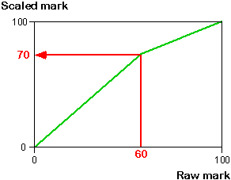

Problems with linear scaling
Linear scaling has its greatest effect on the highest and lowest marks in a class. If you have one student whose mark is 0% and another whose mark is 100% and you want to keep these marks unchanged, then a simple linear scaling cannot be used to increase or decrease the mean mark in the class.
Piecewise linear scaling
An alternative scaling method is called piecewise linear scaling. It ensures that marks of 0% and 100% remain unaltered but scales up or down marks between. The transformation is defined by choosing some intermediate mark and specifying the mark to which it should be scaled. Marks below this mark are linearly scaled and marks above it are also linearly scaled but with different parameters.
For example, if we want a raw mark of 60 to be scaled up to 70, the diagram below shows the piecewise scaling that is implied.

We will explain how to perform this type of scaling using Excel in the next page, but the diagram below helps to explain the effect of the transformation.
The horizontal jittered dot plot below the following diagram shows marks for a class of 23 students.
The test was difficult and the median mark in the class was only 43, so we might want to increase the median to 60. Select the cross for the student (Daniel) who had a raw mark of 43.
Drag the red arrow to a raw mark of 43 and scaled mark of 60. This piecewise transformation has little effect on the highest and lowest marks in the class, but increases the centre of the distribution of marks.